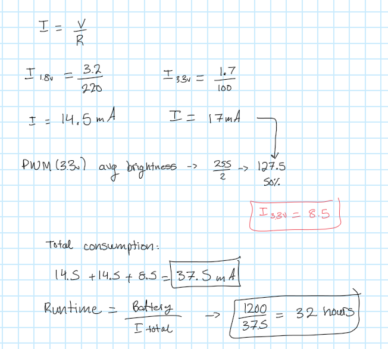

Here is the circuit design for assignment 2

This circuit is controlled by the button. When the button is pressed, the blue LED will begin fading while the two other LED's stay on. In this circuit, the button uses a 10k Ohm resistor, being powered on by pin3. The green LED's are connected to a 220 ohm resistor and powered by pin 7/8. The blue LED is connected to a 100 ohm resistor and powered by pin 9.
Here is the schematic for the circuit..
Below is the code used for this assignment:
// constants won't change. They're used here to set pin numbers:
const int buttonPin = 3; // the number of the pushbutton pin
const int greenPin1 = 7; // the number of the LED(green1) pin
const int greenPin2 = 8; // the number of the LED(green2) pin
const int bluePin = 9; // the number of the LED(blue) pin
// variables will change:
int buttonState = 0; // variable for reading the pushbutton status
int lastButtonState = LOW; // variable to store the last button state
bool isFading = false;
void setup() {
// initialize the LED pins as an output:
pinMode(greenPin1, OUTPUT);
pinMode(greenPin1, OUTPUT);
pinMode(bluePin, OUTPUT);
// initialize the pushbutton pin as an input:
pinMode(buttonPin, INPUT);
}
void loop() {
// read the current state of the button
buttonState = digitalRead(buttonPin);
// check if the button state has changed (toggle behavior)
if (buttonState == HIGH && lastButtonState == LOW) {
isFading = !isFading; // toggle fading state
delay(50); // debounce delay
}
// store the current button state
lastButtonState = buttonState;
if (isFading) {
// looping for fading in (getting brighter)
for (int brightness = 0; brightness <= 255; brightness++) {
analogWrite(bluePin, brightness); // gradually increase brightness
delay(10); // small delay for smooth fading
}
// looping for fading out (getting dimmer)
for (int brightness = 255; brightness >= 0; brightness--) {
analogWrite(bluePin, brightness); // gradually decrease brightness
delay(10); // small delay for smooth fading
}
// green LEDs stay on
digitalWrite(greenPin1, HIGH);
digitalWrite(greenPin2, HIGH);
} else {
// Turn off the blue LED and keep the green LEDs solid
analogWrite(bluePin, 0);
digitalWrite(greenPin1, HIGH); // steady ON state for green LEDs
digitalWrite(greenPin2, HIGH);
}
}
Below is a GIF of the circuit operation:

1. Draw a graph where the X axis is time and the Y axis is voltage. Draw 3 lines representing the voltage across an LED with analogWrite(led, 65), analogWrite(led, 128), and analogWrite(led, 255).
2. Given your schematic, circuit, and firmware, assuming the only thing that draws current is your LEDs, how long would your circuit run if powered by a 1200 mAh battery?
Answer: ~ 32 hours
